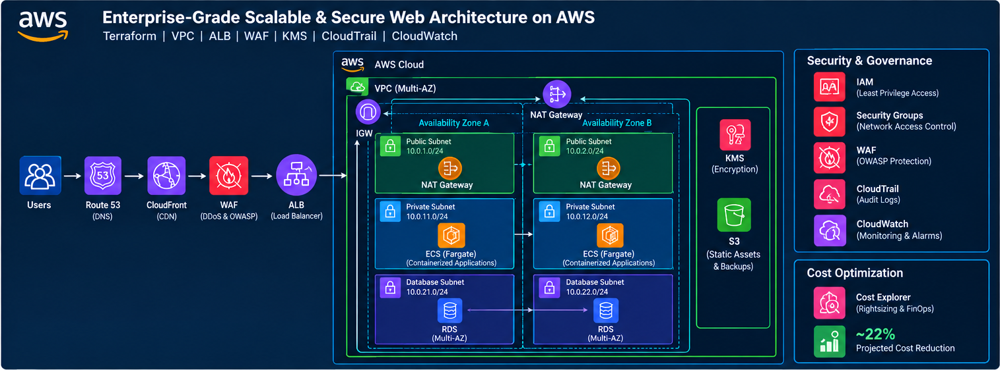
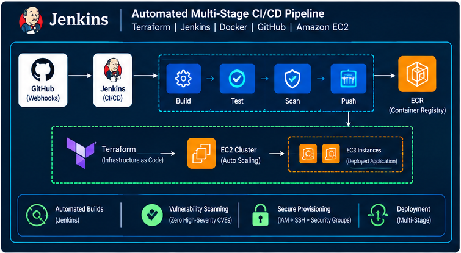
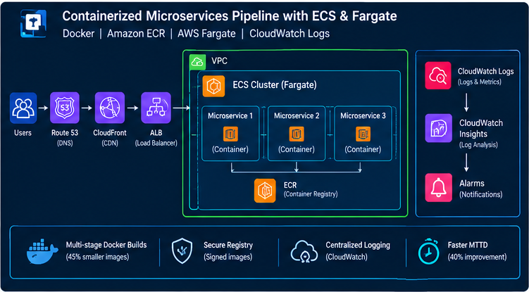
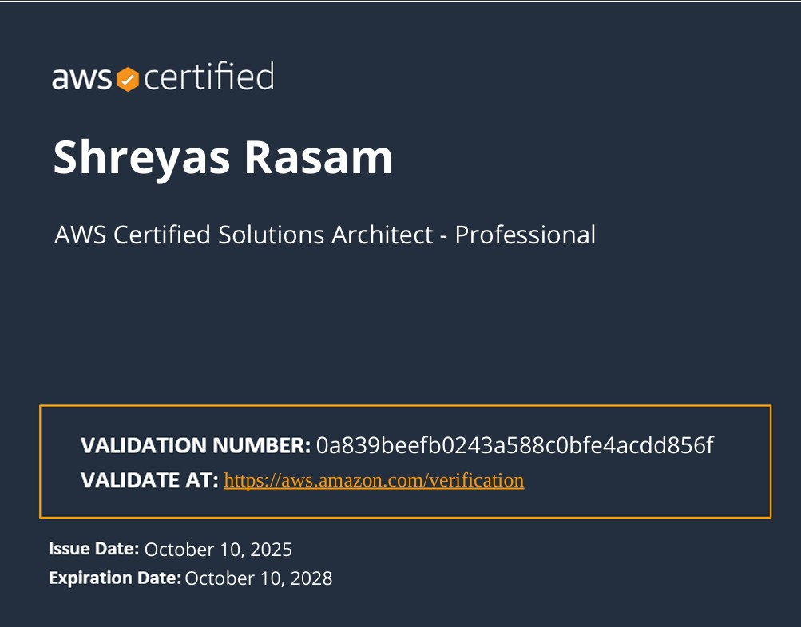
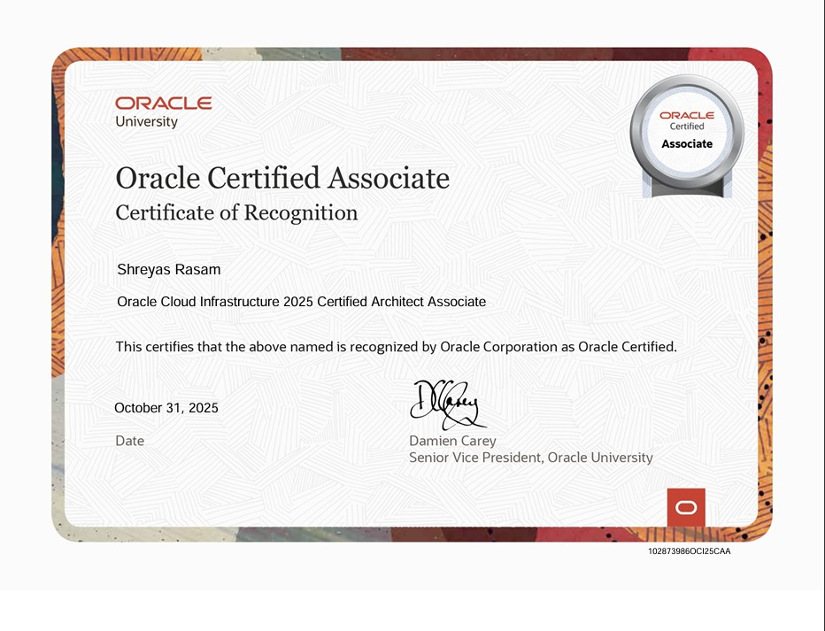

CLOUD · DEVOPS · SECURITY
HELLO, I'M
Shreyas
Rasam.
AWS Cloud & DevOps Engineer
Building secure, scalable and automated cloud infrastructure with AWS, Terraform, Docker and CI/CD. Focused on infrastructure as code, cloud security, reliability and operational excellence.
Shreyas Rasam
AWS Cloud & DevOps
AWS Cloud
Architecture & Security
Infrastructure as Code
Terraform · Automation
01 / ABOUT ME
Engineering reliable
cloud solutions.
I'm a technology professional interested in cloud architecture, DevOps automation and cloud security. I enjoy turning infrastructure requirements into repeatable, secure and maintainable deployments.
My technical interests include AWS networking, IAM, infrastructure as code, containerized workloads, delivery pipelines, monitoring and security event detection.
I bring experience in technical support and operations, along with a background in Electronics and Telecommunication Engineering. I continue to develop practical cloud projects and hands-on skills.
Explore my technical work ↗
cloud-engineer.json
{
"name": "Shreyas Rasam",
"focus": "Cloud & DevOps",
"cloud": "AWS",
"iac": "Terraform",
"containers": "Docker / ECS",
"security": "IAM / Monitoring",
"mindset": "Automate & Improve"
}
02 / TECHNICAL SKILLS
Tools of the trade.
Technologies and practices relevant to cloud infrastructure, automation, security and operations.
Infrastructure as Code
DevOps & CI/CD
Cloud Security
Monitoring & Operations
Scripting & Platforms
03 / EXPERIENCE
Professional journey.
Technical Support Engineer
Orbit TechSol
Supporting technical operations, troubleshooting issues, investigating incidents and coordinating resolutions. Add specific tools, responsibilities and measurable outcomes here when they accurately reflect your day-to-day work.
Senior Associate
SBI Life Insurance Ltd.
Worked in a process-driven professional environment with a focus on operational support, coordination, issue resolution and service delivery. Add verified role-specific achievements here.
04 / SELECTED PROJECTS
Building in the cloud.
Four cloud engineering projects covering AWS architecture, delivery automation, containerization and security monitoring.

View image ↗Enterprise-Grade Scalable & Secure Web Architecture on AWS
A multi-tier architecture design featuring a multi-AZ VPC, isolated public and private subnets, NAT gateways and containerized workloads on ECS Fargate behind an ALB. Security components include WAF, KMS, CloudTrail and CloudWatch.
Architecture and outcomes should reflect your actual implementation.

View image ↗Automated Multi-Stage CI/CD Pipeline
A delivery pipeline concept using GitHub, Jenkins and Docker to automate build and test stages, with Terraform for infrastructure provisioning and vulnerability scanning before deployment.
Document the pipeline stages and security checks you have tested.

View image ↗Containerized Microservices Pipeline with ECS & Fargate
A container deployment workflow using multi-stage Docker builds, Amazon ECR for image storage, ECS Fargate for container orchestration and CloudWatch for logs and operational insights.
Add build measurements and monitoring results only when verified.
 View image ↗
View image ↗
AWS Cloud Security Monitoring & Threat Detection
A security monitoring workflow combining Amazon GuardDuty, AWS Security Hub, CloudTrail and AWS Config. EventBridge, CloudWatch and SNS can route relevant findings into an alerting workflow for investigation and response.
Mark as In Progress if the architecture is not yet deployed and tested.
Project images are visual representations. Replace them with screenshots of your own deployed infrastructure, test results or GitHub repositories as your projects progress.
05 / EDUCATION
Academic foundation.
Bachelor of Engineering
Electronics & Telecommunication Engineering
Vidyalankar Institute of Technology
CGPA: 8.87 / 10Diploma in Engineering
Electronics Engineering
Government Polytechnic Mumbai
Percentage: 86%06 / CERTIFICATIONS
Learning & credentials.

AMAZON WEB SERVICES
AWS Certification
Refer to the actual certificate for the exact certification title, issue date and credential verification.

ORACLE
Oracle Cloud Certification
Refer to the actual certificate for the exact certification title, issue date and credential verification.
My Resume
Download my resume to explore my professional experience, technical skills, certifications, and projects.
08 / GET IN TOUCH
Let's connect.
Interested in cloud infrastructure, DevOps automation or cloud security opportunities? Feel free to connect with me.
Contact Me ↗
EMAIL
Shreyas.rasam@outlook.com
↗
LINKEDIN
Connect professionally
↗
GITHUB
Explore repositories
↗
LOCATION
Mumbai, India